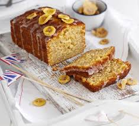

The Very best banana bread recipe

Here is a quick guide on how to make Banana Bread.
A cross between banana bread and a drizzle cake, this easy banana loaf recipe is a quick bake that can be frozen.
It's great for using up overripe bananas, too.
Please see below for a ingredients list and a step by step guide.
- 140g Butter, Softened.
- 140g Caster sugar, Golden is preffered.
- 2 Large eggs, Beaten.
- 140g Self-raising flour, Sifted.
- 2 VERY ripe Banana's.
- 50g Icing sugar.
- Heat oven to 180C/160C fan/gas 4.
- Butter a 2lb loaf tin and line the base and sides with baking parchment.
- Cream 140g softened butter and 140g caster sugar until light and fluffy, then slowly add 2 beaten large eggs with a little of the 140g flour.
- Fold in the remaining flour, 1 tsp baking powder and 2 mashed bananas.
- Pour the mixture into the prepared tin and bake for about 50 mins, or until cooked through.
Check the loaf at 5-min intervals from around 30-40 mins in the oven by testing it with a skewer (it should be able to be inserted and removed cleanly), as the time may vary depending on the shape of your loaf tin.
- Cool in the tin for 10 mins, then remove to a wire rack.
- Mix 50g icing sugar with 2-3 tsp water to make a runny icing.
- Drizzle the icing across the top of the cake and enjoy.